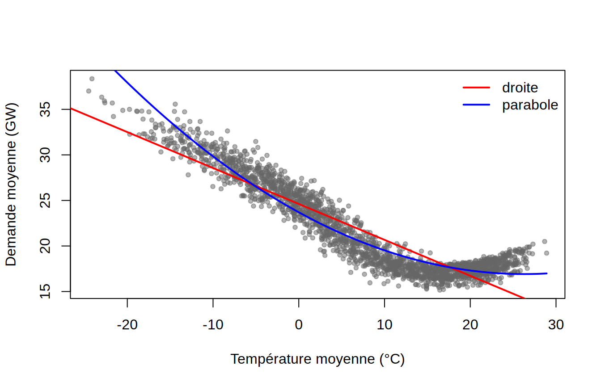
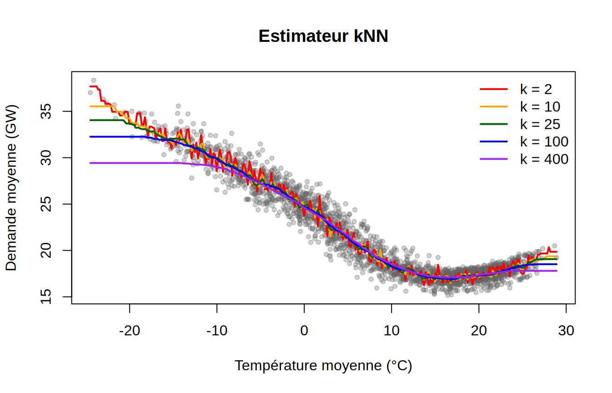
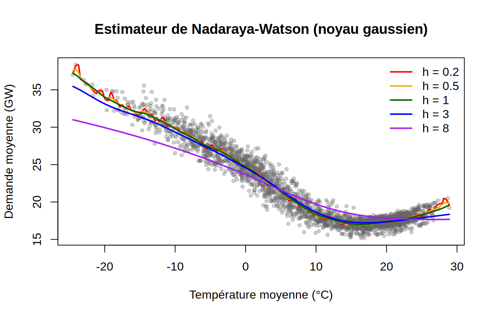
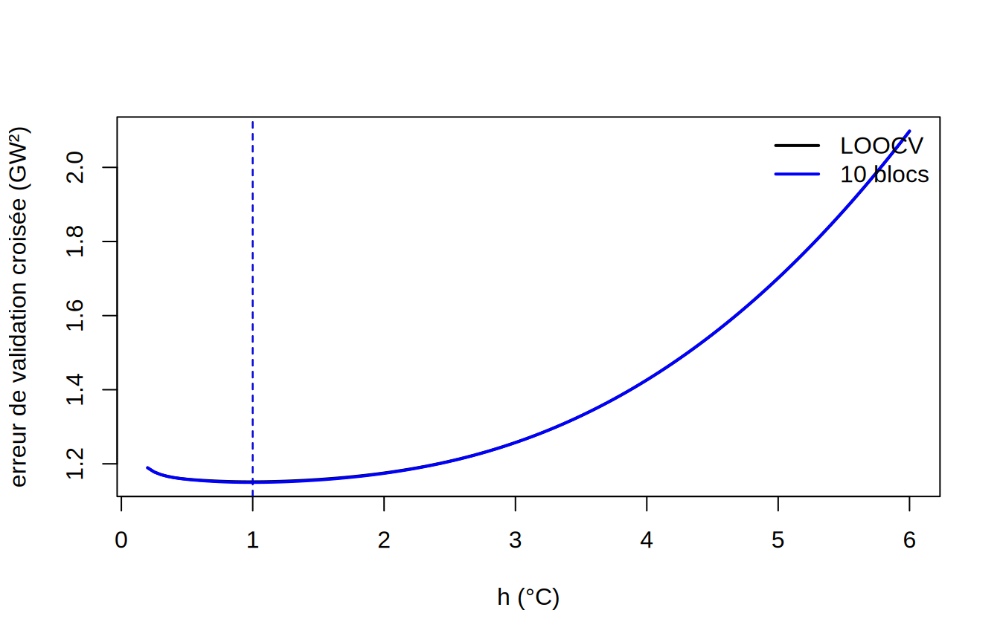
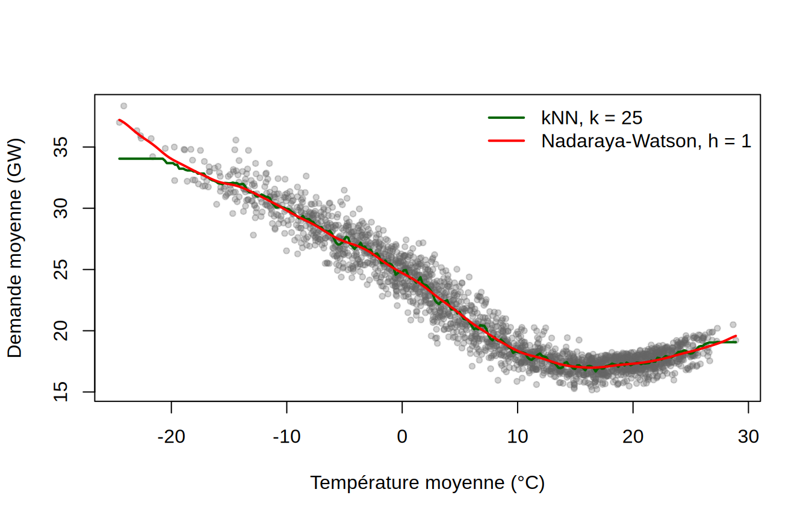

📘SujetRégression non paramétrique : kNN et estimateur de noyau
NoteÀ propos de ces solutions
Les réponses ci-dessous sont une proposition de solution, pas la seule possible : d’autres valeurs de \(k\) et de \(h\), d’autres grilles et d’autres façons de coder la validation croisée sont acceptables tant que la démarche est justifiée. Les commentaires attendus sont résumés après chaque bloc de code.
library(FNN)library(KernSmooth)hydro <-read.csv("../notes/Jeux de données/demande_temperature_horaire.csv")hydro <-subset(hydro, annee <=2024&!is.na(demande_mw) &!is.na(temp_ponderee))jours <-aggregate(cbind(demande_mw, temp_ponderee) ~ date_locale, data = hydro, FUN = mean)jours$demande <- jours$demande_mw /1000# en GWx <- jours$temp_pondereey <- jours$demanden <-length(y)xg <-seq(min(x), max(x), length.out =300) # grille pour tracer les courbesn
[1] 2191
Chaque ligne de jours est une journée de 2019 à 2024 : la demande moyenne de la journée (demande, en GW) et la température moyenne de la journée (temp_ponderee, en °C), obtenues en faisant la moyenne des 24 valeurs horaires. Les heures sans demande ou sans température (une cinquantaine sur six ans) sont écartées avant l’agrégation.
1. Nuage de points
plot(x, y, pch =20, col =adjustcolor("grey40", 0.5), xlab ="Température moyenne (°C)",ylab ="Demande moyenne (GW)")abline(lm(y ~ x), col ="red", lwd =2)lines(xg, predict(lm(y ~poly(x, 2)), data.frame(x = xg)), col ="blue", lwd =2)legend("topright", c("droite", "parabole"), col =c("red", "blue"), lwd =2, bty ="n")

La relation a la forme d’une crosse de hockey : sous 15 °C environ, la demande augmente à peu près linéairement quand la température baisse (chauffage électrique, environ 0,5 GW par degré), puis elle atteint un plancher autour de 17-18 GW entre 15 et 22 °C, et remonte légèrement pour les journées les plus chaudes (climatisation). La droite est inadéquate : elle sous-estime la demande des journées très froides et très chaudes et la surestime autour de 15 °C. La parabole fait mieux mais reste symétrique par construction, alors que la relation est à peu près linéaire d’un côté et presque plate de l’autre : elle surestime la demande des journées très froides et déforme le plancher. On ne connaît pas a priori la forme fonctionnelle qui conviendrait, d’où l’intérêt d’une approche non paramétrique.
Deux particularités méritent d’être notées. Les journées très froides sont rares (8 journées sous \(-20\) °C et 41 sous \(-15\) °C, sur 2191), alors que les températures entre \(-5\) et 20 °C sont très denses. Ensuite, bien que la température soit une moyenne de 24 valeurs, 22 journées partagent exactement la même température qu’une autre (22 ex æquo) : c’est négligeable ici, contrairement au cas d’une variable fortement discrétisée.
2. Estimateur kNN pour plusieurs valeurs de \(k\)
knn.reg attend des matrices (ou des data frames) pour train et test, d’où l’usage de matrix.
ks <-c(2, 10, 25, 100, 400)couleurs <-c("red", "orange", "darkgreen", "blue", "purple")plot(x, y, pch =20, col =adjustcolor("grey40", 0.3), xlab ="Température moyenne (°C)",ylab ="Demande moyenne (GW)", main ="Estimateur kNN")for (j inseq_along(ks)) { fk <-knn.reg(train =matrix(x), test =matrix(xg), y = y, k = ks[j])lines(xg, fk$pred, col = couleurs[j], lwd =2)}legend("topright", legend =paste("k =", ks), col = couleurs, lwd =2, bty ="n")

Plus \(k\) est petit, plus la courbe est rugueuse : avec \(k = 2\), \(\hat f\) suit les fluctuations d’une journée à l’autre (variance élevée). Plus \(k\) est grand, plus la courbe est lisse, mais elle finit par écraser la structure : avec \(k = 400\) (sur \(n = 2191\) observations), le voisinage couvre près d’un cinquième des journées et la courbe sous-estime nettement la demande des journées les plus froides, dont les voisins sont presque tous plus chauds qu’elles (biais élevé) ; le plancher estival est lui aussi relevé. C’est le compromis biais-variance : le biais croît avec \(k\) et la variance, égale à \(\sigma^2/k\), décroît avec \(k\). Les valeurs intermédiaires (\(k = 10\) à \(100\)) donnent des courbes raisonnables. Aux températures extrêmes, le voisinage kNN s’élargit automatiquement : pour \(x = -24\) °C, les 25 plus proches voisins vont jusqu’à \(-17\) °C environ, et la courbe y est plate alors que la relation continue probablement de monter.
3. Choix de \(k\) par le critère PRESS (LOOCV)
Le critère PRESS retourné par knn.reg est la somme des carrés des erreurs de prédiction obtenues en excluant une observation à la fois : c’est \(n\) fois le \(VC_{(n)}\) des notes.
ks.grille <-1:200press <-sapply(ks.grille, function(k) knn.reg(train =matrix(x), y = y, k = k)$PRESS)k.min <- ks.grille[which.min(press)]plot(ks.grille, press / n, type ="l", lwd =2, xlab ="k",ylab ="PRESS / n (LOOCV, GW²)")abline(v = k.min, lty =2, col ="red")
On obtient \(k_{\min} = 25\), avec une erreur LOOCV de 1.19 GW². L’erreur est très élevée pour \(k = 1\) (variance maximale), chute rapidement, puis remonte très lentement : la courbe est encore plus plate que dans les notes, et toute valeur entre 16 et 90 environ donne une erreur à moins de 2 % du minimum. Avec \(n = 2191\), un grand \(k\) coûte peu en biais tant que le voisinage reste étroit en température, et le choix exact de \(k\) importe peu. L’erreur LOOCV de l’estimateur kNN est 3.1 fois plus petite que celle de la droite et 1.7 fois plus petite que celle de la parabole : la non-linéarité de la relation est réelle et importante, et aucun des deux modèles paramétriques simples ne la capte.
4. Estimateur de Nadaraya-Watson pour plusieurs fenêtres \(h\)
hs <-c(0.2, 0.5, 1, 3, 8)plot(x, y, pch =20, col =adjustcolor("grey40", 0.3), xlab ="Température moyenne (°C)",ylab ="Demande moyenne (GW)", main ="Estimateur de Nadaraya-Watson (noyau gaussien)")for (j inseq_along(hs)) { fh <-locpoly(x, y, degree =0, bandwidth = hs[j], gridsize =401, range.x =range(x))lines(fh$x, fh$y, col = couleurs[j], lwd =2)}legend("topright", legend =paste("h =", hs), col = couleurs, lwd =2, bty ="n")

La fenêtre \(h\) joue exactement le rôle de \(k\) : \(h\) petit donne une courbe oscillante (variance), \(h\) grand une courbe trop lisse qui tend vers \(\bar y\) (biais) ; avec \(h = 8\) °C, la crosse de hockey devient une courbe molle qui sous-estime les journées froides de plusieurs GW. La différence avec kNN est que les poids \(w_i(x)\) décroissent continûment avec la distance \(|X_i - x|\), de sorte que les courbes sont continues et lisses même pour un petit \(h\), alors que les courbes kNN sont en escalier. Autre différence : la fenêtre est fixe alors que le voisinage kNN s’adapte à la densité des \(X_i\). Pour les journées les plus froides, un noyau de fenêtre 0,2 ou 0,5 °C ne s’appuie que sur une poignée de journées et devient très instable : la courbe y zigzague d’une journée à l’autre.
5. Choix de \(h\) par validation croisée
LOOCV par la formule explicite
L’estimateur de Nadaraya-Watson est linéaire en \(Y\) : \(\hat f(x) = \sum_i w_i(x) Y_i\). Le critère LOOCV s’écrit donc sans réajuster le modèle \(n\) fois : \[
cv.n(h) = \frac{1}{n}\sum_{i=1}^n\left(\frac{Y_i - \hat f(X_i)}{1 - w_i(X_i)}\right)^2 .
\] La fonction ci-dessous calcule la matrice des poids \(W\) (dont la ligne \(i\) contient les \(w_j(X_i)\)), puis le critère. locpoly utilise le noyau gaussien avec bandwidth comme écart-type, d’où dnorm.
cv.n <-function(h, x, y) { W <-dnorm(outer(x, x, "-") / h) W <- W /rowSums(W) f.hat <-as.vector(W %*% y)mean(((y - f.hat) / (1-diag(W)))^2)}hs.grille <-seq(0.2, 6, by =0.05)cv.loo <-sapply(hs.grille, cv.n, x = x, y = y)h.min <- hs.grille[which.min(cv.loo)]h.min
[1] 1
Validation croisée à 10 blocs (variante)
Une alternative, plus coûteuse mais plus générale, consiste à réajuster locpoly sur 9 blocs et à prédire le dixième par interpolation sur la grille retournée.
set.seed(4300)blocs <-sample(rep(1:10, length.out = n))cv.10<-function(h) { err <-sapply(1:10, function(b) { ent <- blocs != b fh <-locpoly(x[ent], y[ent], degree =0, bandwidth = h,gridsize =801, range.x =range(x)) pred <-approx(fh$x, fh$y, xout = x[!ent], rule =2)$ymean((y[!ent] - pred)^2) })mean(err)}cv.k10 <-sapply(hs.grille, cv.10)h.min10 <- hs.grille[which.min(cv.k10)]plot(hs.grille, cv.loo, type ="l", lwd =2, xlab ="h (°C)", ylab ="erreur de validation croisée (GW²)",ylim =range(c(cv.loo, cv.k10)))lines(hs.grille, cv.k10, lwd =2, col ="blue")abline(v =c(h.min, h.min10), lty =2, col =c("black", "blue"))legend("topright", c("LOOCV", "10 blocs"), col =c("black", "blue"), lwd =2, bty ="n")

c(LOOCV = h.min, `10 blocs`= h.min10)
LOOCV 10 blocs
1 1
Le LOOCV donne \(h_{\min} = 1\) °C et la validation croisée à 10 blocs une valeur voisine (\(1\) °C). Comme pour \(k\), la courbe est plate autour du minimum : entre 0,3 et 2 °C, l’erreur varie de moins de 3 %. L’erreur LOOCV minimale, 1.15 GW², est légèrement inférieure à celle de kNN.
Comparaison des deux courbes sélectionnées
f.knn <-knn.reg(train =matrix(x), test =matrix(xg), y = y, k = k.min)$predf.nw <-locpoly(x, y, degree =0, bandwidth = h.min, gridsize =401, range.x =range(x))plot(x, y, pch =20, col =adjustcolor("grey40", 0.3), xlab ="Température moyenne (°C)",ylab ="Demande moyenne (GW)")lines(xg, f.knn, col ="darkgreen", lwd =2)lines(f.nw$x, f.nw$y, col ="red", lwd =2)legend("topright", c(paste("kNN, k =", k.min), paste("Nadaraya-Watson, h =", h.min)),col =c("darkgreen", "red"), lwd =2, bty ="n")

xg[which.min(f.knn)]
[1] 16.75809
f.nw$x[which.min(f.nw$y)]
[1] 16.35355
Les deux courbes captent la même crosse de hockey et leurs erreurs LOOCV sont du même ordre (1.19 GW² pour kNN, 1.15 GW² pour le noyau). La courbe kNN est en escalier et la courbe à noyau est lisse. Le minimum de la demande est atteint vers 16 °C, à environ 17 GW ; au-delà, la demande remonte d’environ 2 GW pour les journées les plus chaudes, ce que les deux estimateurs reproduisent (la climatisation prend le relais du chauffage). Aux températures extrêmes, kNN est un peu plus stable parce que son voisinage s’élargit automatiquement là où les données sont rares, alors que le noyau à fenêtre fixe s’appuie sur une poignée de journées sous \(-20\) °C et que sa courbe y est irrégulière.
6. Comparaison des deux approches
Les deux estimateurs sont des moyennes locales pondérées de \(Y\) et partagent le même compromis biais-variance, réglé par un seul paramètre (\(k\) ou \(h\)) choisi par validation croisée. Ils ne postulent aucune forme fonctionnelle et sont simples à comprendre et à implémenter ; sur ces données, ils font beaucoup mieux que la droite ou la parabole.
kNN : le voisinage s’adapte à la densité des \(X_i\) (plus large là où les données sont rares), ce qui le rend robuste aux zones peu denses et aux extrémités, et la variance \(\sigma^2/k\) est la même partout. En revanche, la courbe est discontinue (en escalier), l’ajout d’une seule observation peut la faire sauter, et les ex æquo sont traités arbitrairement. Aux extrémités, le voisinage élargi produit un plateau artificiel : la demande estimée cesse de croître sous \(-20\) °C alors qu’elle continue vraisemblablement de monter.
Noyau : la courbe est continue et lisse, ce qui est plus agréable pour l’interprétation et pour estimer des dérivées (ici, la sensibilité de la demande à la température, en GW par degré). En revanche, une fenêtre fixe devient instable dans les zones peu denses (variance élevée là où il y a peu de journées), et les deux estimateurs sont biaisés aux bords (le voisinage y est asymétrique ; les polynômes locaux de degré 1, degree = 1 dans locpoly, corrigent ce biais de bord et extrapolent la pente plutôt qu’un plateau).
Plusieurs variables explicatives : les deux méthodes se généralisent en remplaçant \(|X_i - x|\) par une distance multivariée. La distance euclidienne est dominée par la variable de plus grande amplitude (le jour de l’année, de 1 à 366, face à la température, de \(-25\) à 29 °C) ; il faut standardiser ou utiliser la distance de Mahalanobis, qui pondère par l’inverse de la matrice de variance-covariance. Dans les deux cas, les méthodes locales se heurtent au fléau de la dimension : en dimension \(p\) élevée, les voisinages deviennent vides et il faut \(k\) ou \(h\) très grands, donc un biais important. kNN s’en tire un peu mieux grâce à son voisinage adaptatif, mais au-delà de deux ou trois variables, des approches structurées comme les modèles additifs (labo 3) sont préférables.
Interprétabilité : aucune des deux approches ne fournit de paramètre interprétable (pas de « pente ») ; on ne peut qu’inspecter la courbe. C’est le prix de la flexibilité.